MUSC292 Notes
Dissonance Link to heading
Voice leading of 7th chord- prep and resolve Link to heading
Be Prepare: approach by common tone > down by step (if not possible) > up by step Resolved By: down a step > common-tone (if not possible) > up a step
- remain its haronic function 7th chord with era Figure labeling, just add the dissonant note beside the figure in the short form: V9
- Classical period: common with V7, viio7, ii7, ii^o^7 - what we’re using in this class
- romantic era: most 7th except I
- Modern music: all chord can take 7th
Added dissonant chord Link to heading
9th, 11th, 13th cho b rd tone
- Only on V7, viio7, ii7, ii^o^7
- Treat them as tendency tone: chodal 7th - going down
- Always include the root, third and seventh (convention during the classic period).
- Chord needs to be in root position
- Omit the fifth
- Always in the soprano line
- Do not double any notes
How to differentciate dissonance and non-chord tone Link to heading
how to differenciate non-chord tone and dissonant chord (if a dissonant chord last longer, then there is a obvious synbol of dissonant chord). however it will ultimately decided by how it is interpretated
Mode Mixture Link to heading
- Chord from parallel key is used in the piece. C+ key chord used in c- key Major - > Minor: lower 3, 6, 7 Minor -> Major: raise 3, 6, 7
- Ending with modal mixture at the end V-I in minor is called “Tierce de Picardie”
- Romain numeral: if roman numeral start with a semitone higher, then put #(sharp), if semitone below then but b (flat) and count the quality chord from there.
- Too much using of mode Mixture can easily turn a piece into modulation
- For the key that doesn’t have parallel key: The key are not important, just make sure the 3, 6, and 7 are changed accordingly
Key Changes Link to heading
- Differ from modulation, tonicization, mode mixture
Modulation Link to heading
- Look how long is the duration of modulation it is.
- Expect a cadence in the modulated key.
Tonicization Link to heading
- Should be 1-2 barlong
- can be series of V tonicization
Mode Mixture Link to heading
- look for the accidental in 3,6 and 7
Harmonic Prolongation Link to heading
- Same chord prolongation
- The sandwitch prolongation
- Mini-TDST
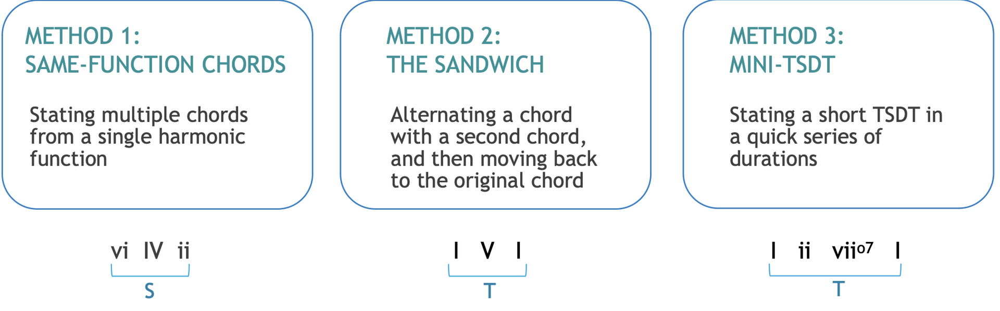
Jazz Notation Link to heading
Lead Sheets Link to heading
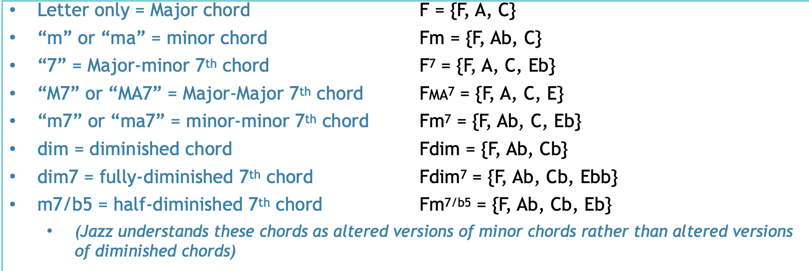
Slash indicates an inversion Link to heading
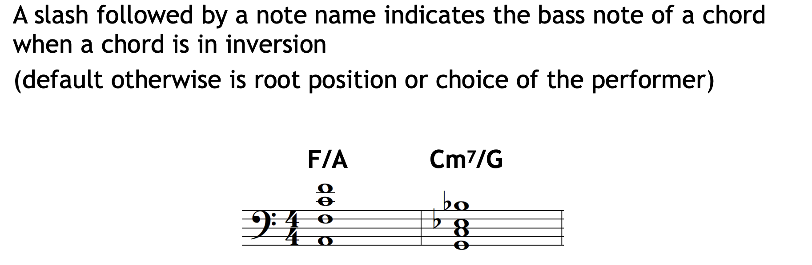
Jazz Form Link to heading
Pop Music Composition Link to heading
Basic Form elements Link to heading
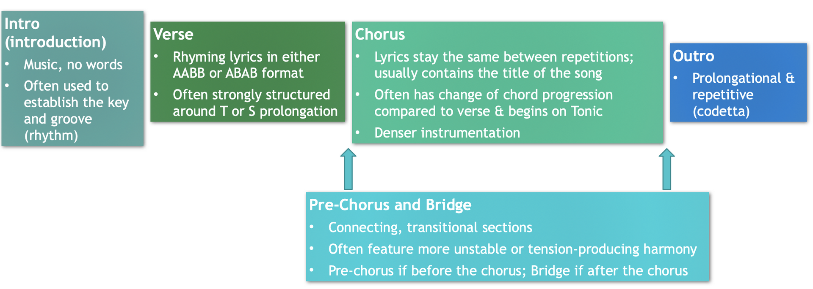
refarin: shorter melody that keeps coming back, there are no other chorus characteristic
Label the part based on their characteristics.
Elements which delineate form Link to heading
Text (Lyrics) Instrument (what instrument are there)/ Orchestration (how to write for those instance) Rhythm (Tempo) Harmony (Melody)
Pop forms Link to heading
- Bar Form (AAB; variation of Binary form)
- Verse/Chorus Form (AB repeats several times = modification of Binary/Rounded Binary or Rondo)
- 12-Bar Blues (each section contains the same 12-bar chord progression: I - - - IV - I - V IV I - )
- 32-Bar Form (listed as AABA in sources, but equivalent to Rounded Binary, as we’ll discuss in the 2nd half of this term) AABA…
- Strophic Form (AAA etc; related to Classical music’s “Theme and Variation” form. Repeats the music but changes the lyrics.)
- Binary and Ternary Forms (same as Classical music)
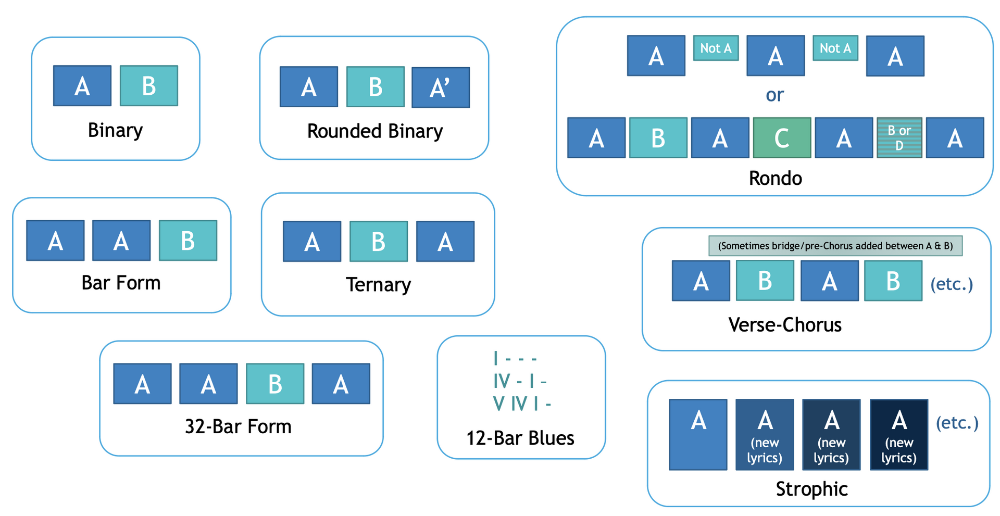
Pop Style: Harmony Link to heading
- less Dominant, so no T-S-D-T, Emphasis is put into Tonic and Subdominant
- Root position more common
- Modes also very common - Dorian/Aeolian/Mixolydian
All the common pop style harmonic progression Link to heading
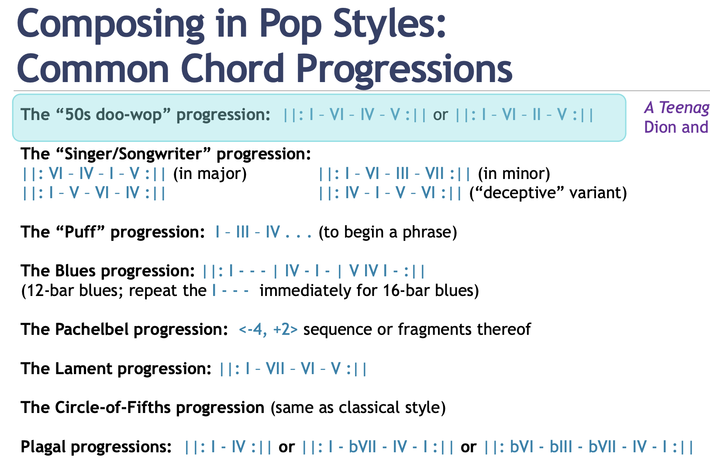
Every Harmony can be both used as Major/Minor- A Teenager in Love by Dion and the Belmonts (1959)
- Love Story by Taylor Swift (2008), intro and chorus sections (left major form) /Behind these Hazel Eyes by Kelly Clarkson (2010), intro section (right minor form)
- Puff the Magic Dragon by Peter, Paul, and Mary (1963)
- Mississippi Delta Blues by Muddy Waters (date unknown) (former)/Johnny B Goode by Chuck Berry (1959) (latter)
- Memories by Maroon 5 (2019)
- Hit the Road, Jack by Ray Charles & the Raelettes (1961)
- I Will Survive by Gloria Gaynor (1978) (minor key!) (circle of fifth)
- Hey Joe by Jimi Hendrix (1966) (cicle of fourth progression)
Pop Style: Rhythm Link to heading
-
Offset harmonic rhythm and melodic arrivals
-
Beat Level Syncopation
-
3+3+2 “Fake triplet”
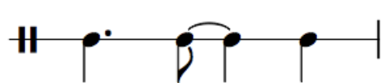
-
Bass instrument maintains the same main harmony on the beat
-
Tritone substitution Link to heading
Must know of drum Link to heading
https://drumbeatsonline.com/notation-20-must-know-drum-beats https://www.onlinedrummer.com/pages/drum-key
Meter and Accent Link to heading
differencial the 6/4 or 3/2 is the “accent” grouping, where is two dotting in the measure, hardly to get the emphasis
pulse : beat meter: secondary pulse
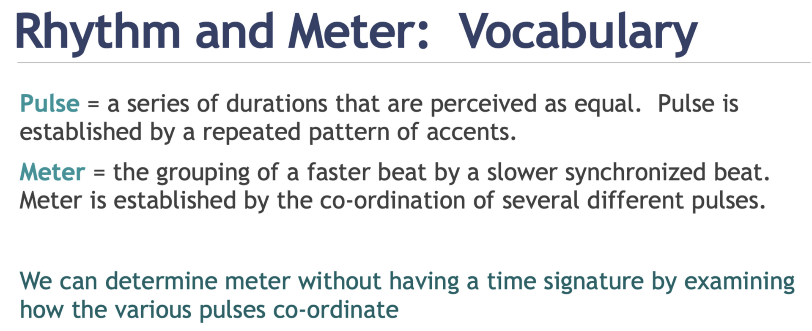
Type of accent Link to heading
- Duratioal: anytime, long note after short note, D often line up with short beat
- Registral: highest and lowest note of passage
- Leap: the larger, the stronger the. accent (3rd is the smallest leap)
- Beginning: note after a substantial silence
- Repetition: duplicate previous content (mostly rhythm or pitch)
- Dynamic: Dynamic level change signifcantly
- Articulation: Change in articulation
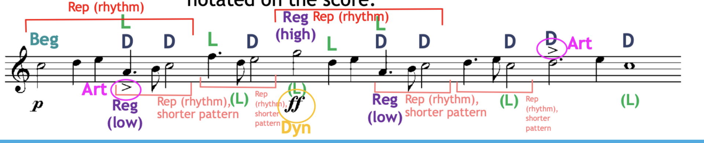
To distinguish bar Link to heading
- Area with multiple acctent often represent strong beat
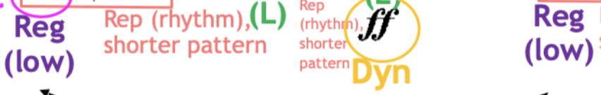
Segmentation Link to heading
Beginning Link to heading
- Any change from the previous material: i.e. register, instrument, etc.
- preceded by a rest
- distinct ending such as cadence
- repeated pattern
Phrase Model Link to heading
- Sentense:
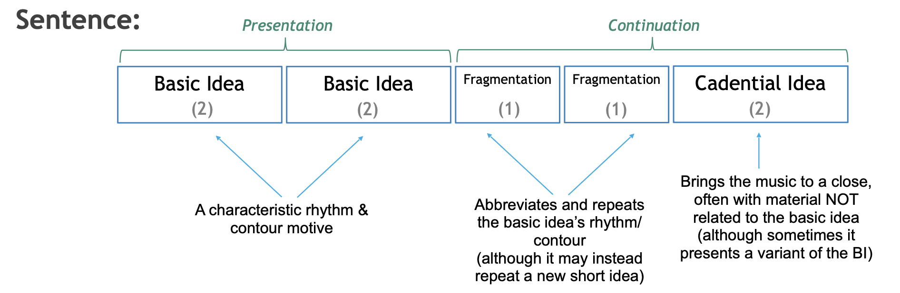
BI, BI, Fragx2, CadI - Period:
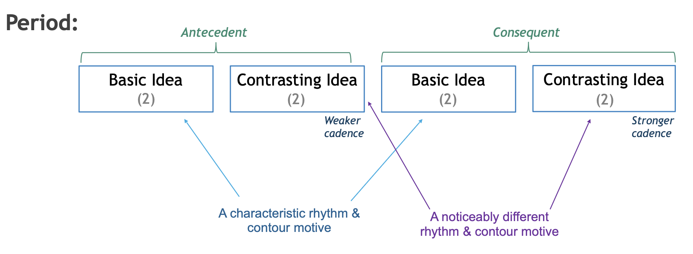
BI, ContI, BI, ContI - Hybrid: half of each:
- i.e. BI, ContI, Fragx2, CadI
- i.e. BI, ContI, BI, ContI
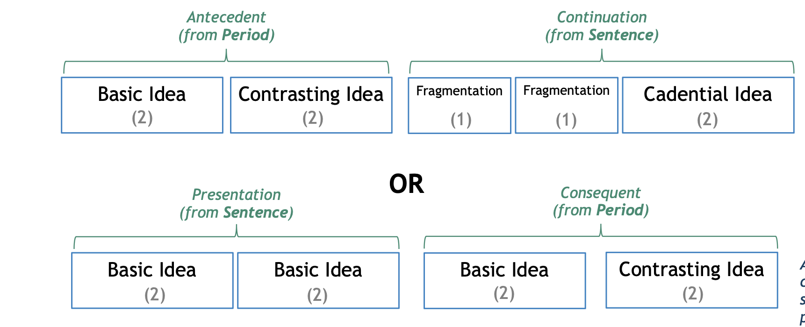
- Contrasting Idea does not have to be the same.
- Contrasting Idea is everything contrast to the basic idea. (by factors)
- Phrases ae determined by the melodic voice The most common ratio for sentenses are “power of 2"4, 8, 16, 32. Any difference will be phrase deviations.
Cadence strength Link to heading
- HC - Weakest
- IAC - Medium
- PAC - Strong
- Many factor can impact cadence strength, such as inversion, tonicization, rhythm, cadential 6/4
Deviation Link to heading
Four type of deviation:
Extra-content: Link to heading
- Extension: added content (can be deleted)
- Pre-cadential Extension (extra repetition) : stuff before a PAC
- Mid-cadential Extension (evaded cadence): sfuff between the cadence(weak cadence) and extra cadence (PAC )
- Quality: Deceptive progression, Weakened Harmonic Progression, Melodic continuation
- Use Harmony to figure what’s happening next
- Post-cadential Extension (Harmonic Prolongation): keep going after a PAC
- Expansion: phrase that stretch: 3 bar BI instead of 2 bars
MIssing-content: Link to heading
- Compression: deleded content: 1 bar BI instead of 2 bars
- Contraction: phrase that shrink: missing a segment
- Link: the join section between two phrase they often appear to be extra.
Forms Link to heading
The following quality are descriptor to describe the forms
Binary, AB form Link to heading
A section Link to heading
- Theme: Distinct theme
- Modulation: Modulation partway through to the dominant/relative Major
- Different Ending: Ends with some chord other than the tonic of the home key
- Traditional Phrase convention: Conventional phrase organization (slight deviation is okay)
B section Link to heading
- Developmental: Longer and more developmental than A
- Some other home key than A section: Re-establishes the home key
- More phrase deviation: Looser-structured phrase groups
- Sequence: Often incorporates sequences
- Variation with A theme: Commonly incorporates motivic material of A with variation
Rounded Binary, ABA' Link to heading
BA’ usually a same unit (together within repeat sign)
A section Link to heading
- Same as Binary A sectin
B section Link to heading
- Shorter than the A
- contrast compared to A
- prolongs V or arrives at the V key
- Ends with HC and move back to the home key for section A
A’ section Link to heading
- reiteration of A theme
- not identical to the A, may have different length or harmony
- provide a suitable cadence in the home key
Ternary ABA Link to heading
A section Link to heading
- Ends in authentic home key
- Starts and end on the same tonic key
- Expository
- Tight-knit phrase and structure
B section Link to heading
- expository, often has its own theme
- different key than A
- tight-knit phrase and structure
A section Link to heading
- Often has the same repeat as A, Da Capo
- If not identical
- Length and harmony are the same
- May feature melodic elaboration
Composite form Link to heading
- Form nested within a form
- Very common in Minuet and Trio movements
Jazz Harmony Link to heading
Bmaj7 = with root B Major-Major 7 B7 = with root B Major-Minor 7 Bmin7 = with root B Minor-Minor 7